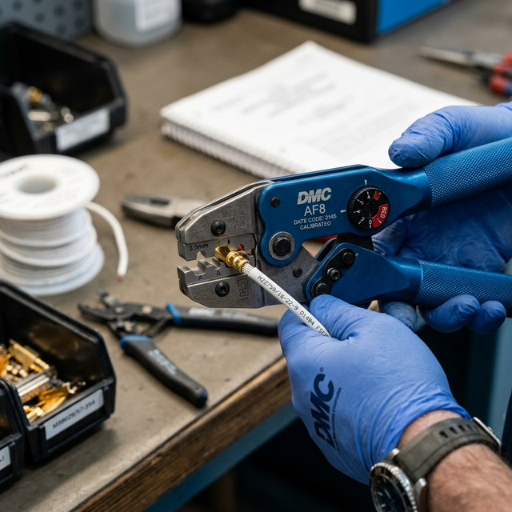

Crimping fundamentals
Module Objectives
- Define the physical characteristics of a gas-tight crimp.
- Explain why non-ratcheting crimp tools are prohibited in aviation.
- Identify the consequences of using an incorrectly sized crimp die.
Why Does This Matter?

A critical navigation connector pin fails intermittently in flight — causing loss of autopilot tracking for 2 seconds, followed by immediate recovery. On the bench, static continuity tests pass perfectly. The technician pulls the suspect contact out of the housing and finds a loose crimp — the wire effortlessly pulls out of the metal barrel with light finger pressure. The original crimp was made with an uncalibrated, hardware-store, pliers-type tool that the installer released before full compression. An approved, calibrated ratcheting tool physically prevents this failure.
What You Need To Know
The Physics of the Crimp Connection
A proper avionics crimp creates a gas-tight, low-resistance, mechanically permanent connection through cold-forming physics:
- 1. The complex die geometry of the crimp tool mechanically crushes and deforms the terminal barrel perfectly around the stripped wire strands.
- 2. The immense, controlled force creates pure metal-to-metal cold bonding between every individual strand and the terminal wall.
- 3. This deformation perfectly seals the interface — no oxygen (gas-tight) can penetrate the connection.
- 4. Because oxygen is excluded, oxidation and corrosion cannot form at the wire-to-terminal interface over the multi-decade lifespan of the aircraft.
Calibrated Ratcheting Crimp Tools
Aircraft wire termination strictly requires a calibrated ratcheting crimp tool (like the ubiquitous blue DMC tools):
- The ratcheting mechanism physically locks the handles. The tool cannot be opened or released until the crimp cycle handles are squeezed to absolute full compression.
- This mechanical interlock guarantees the exact same massive crimp force on every single termination, regardless of hand strength or fatigue.
- Non-ratcheting (pliers-type) tools allow technicians to make partial crimps that look visually complete but lack the internal deformation required. They will inevitably pull loose under flight vibration.
Crimp Tool Die Selection (The Matrix)
The correct die (or turret head) must exactly match two specific physical parameters:
- 1. Terminal/Contact Type — Determines the die geometry (the shape of the crush, whether indent or wrapped barrel).
- 2. Wire Gauge (AWG) Selector — Determines the absolute depth of the crimp indentation.
Using the wrong die completely ruins the termination:
- Over-crimped (Die too small/Gauge selector too high) → Crushes and fractures the barrel, heavily scoring and breaking the delicate copper strands inside.
- Under-crimped (Die too large/Gauge selector too low) → Leaves a loose connection that is not gas-tight, guaranteeing high contact resistance and future pull-out failure.
System Visualization
graph TD
A[Prepare to Crimp Contact] --> B[Verify Contact Part Number]
B --> C[Check Tool Matrix for correct Die/Turret]
C --> D[Install Die into Ratcheting Tool]
D --> E[Set Wire Gauge Selector Depth e.g. 20 AWG]
E --> F[Insert Stripped Wire into Contact]
F --> G[Squeeze Handles Fully]
G -.->|Handles lock midway| H[Operator fatigue - cannot release]
H -.->|Must squeeze tighter| I[Handles finally release at full lock]
I --> J[Perfect, Gas-Tight Cold Form Crimp Guaranteed]
style C fill:#1e40af,stroke:#1e3a8a,stroke-width:2px,color:#fff
style J fill:#166534,stroke:#14532d,stroke-width:2px,color:#fff
On The Job
Before squeezing the handles, visually verify: Do I have the correct terminal? Do I have the correct color turret installed? Is the gauge selector dial matched to the wire I am holding? After crimping, perform a swift tug-test on the connection — it should not pull free under firm force. If it moves at all, the crimp is defective, the wire must be cut back, and the process restarted with a newly verified tool setting.
Reference Terms
Proper Aircraft Wire Termination
Aircraft wire termination requires type-approved, correctly sized crimp terminals applied with a calibrated ratcheting crimp tool — the ratcheting mechanism ensures the crimp cycle completes fully before releasing, guaranteeing a consistent, gas-tight connection.
Connector Contact Tools
Installing contacts in aircraft connectors requires two tool types: a ratcheting crimp tool (to crimp the contact onto the wire) and contact insertion/extraction tools (to seat the contact in the connector insert or remove it without damage).
Crimp Connection Mechanism
A crimp tool mechanically deforms the terminal barrel around wire strands under controlled force, creating a gas-tight zone where metal-to-metal contact occurs and oxidation cannot penetrate — resulting in a low-resistance, mechanically strong, permanent connection.
Crimp Tool Die Selection
The correct crimp die must match both the terminal/contact type AND the wire gauge being terminated. Using the wrong die produces either an over-crimped (crushed, damaged) or under-crimped (loose, not gas-tight) connection — both of which will fail over time.
Gas-Tight Crimp
A physical deformation crimp that seals the wire-to-terminal interface from environmental oxygen, permanently preventing internal oxidation and maintaining ultra-low resistance.
Ratcheting Crimp Tool
A specialized, calibrated hand tool that mechanically cannot release its jaws until the full programmed crimp force cycle is completed.
Turret Head / Die
The interchangeable mechanical component of a crimp tool that dictates the physical shape and depth of the crush applied to the terminal.
Assessment Check
You must exclusively use a calibrated ratcheting crimp tool fitted with the exact correct die for the terminal and wire gauge — partial crimps from cheap tools cause catastrophic intermittent system failures. --- ---